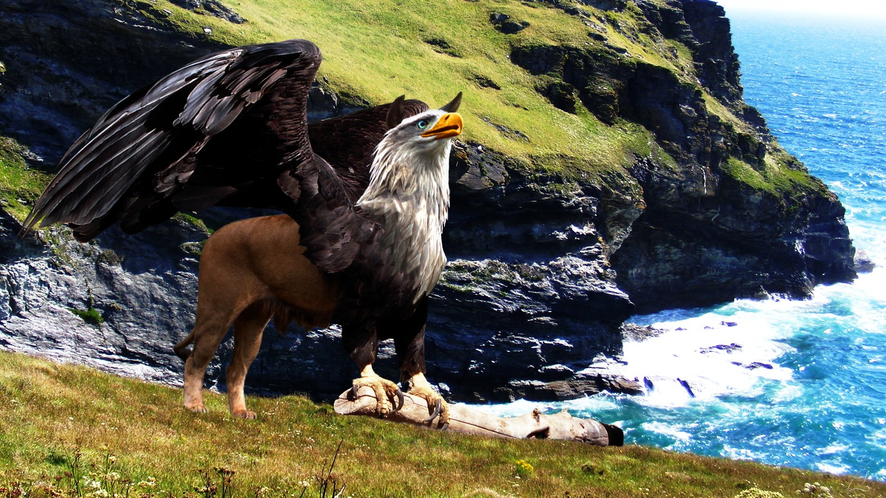

El grifo es una criatura mitológica con cuerpo, patas traseras y cola de león, mientras que su cabeza, alas y garras delanteras pertenecen a un águila. Esta combinación une a dos animales considerados reyes en sus dominios: el león como rey de la tierra y el águila como reina del cielo. Por ello, el grifo representa poder, valentía, nobleza y vigilancia. En las antiguas civilizaciones de Oriente Medio, Grecia y Persia, se creía que los grifos custodiaban tesoros inmensos, montañas de oro o lugares sagrados. Debido a su fuerza y agilidad, se pensaba que era casi imposible derrotarlos. En la Edad Media, el grifo también apareció en escudos y emblemas de familias nobles y reinos, ya que simbolizaba protección y autoridad. Hoy en día sigue apareciendo en libros, películas y videojuegos como una de las criaturas fantásticas más imponentes.